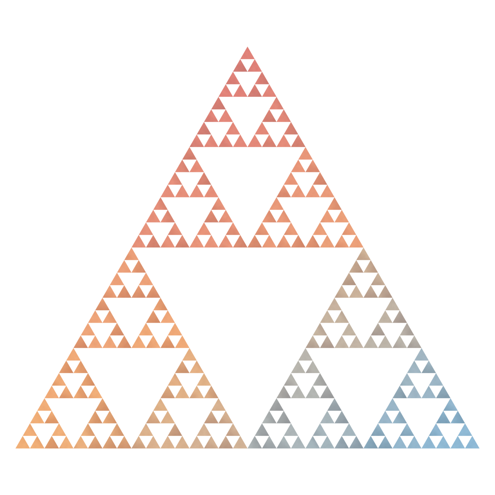
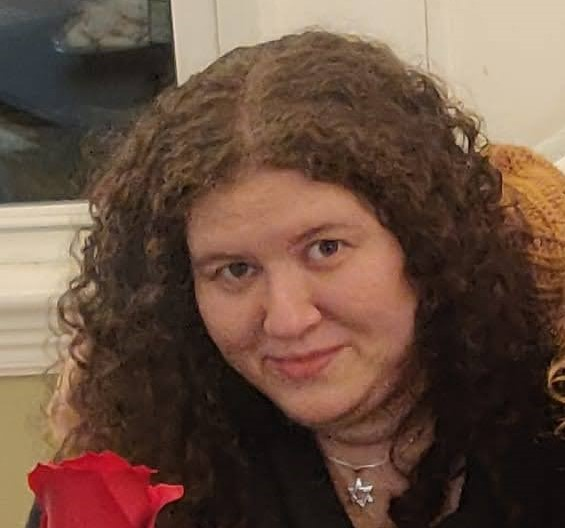
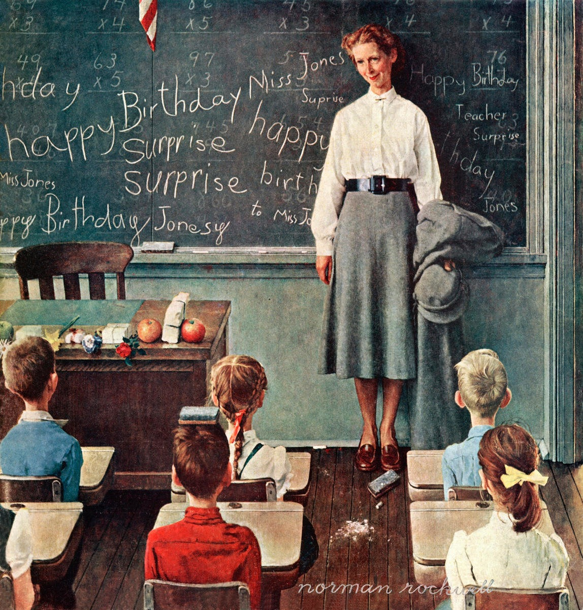

Private math tutoring · Greater Boston & online
One-on-one math tutoring.
Grades 2 to 12 and beyond. Arithmetic through calculus, statistics, and competition math.

Sierpiński triangle · depth 5
First, we talk. I want to know about your child, what they need, and what your family's goals are. Every student and every family is different, and I will adjust my approach depending on the situation.
And I will, in turn, answer any questions you may have, and most parents have many.
I can talk in either English or Russian, whichever is more comfortable for you.
The student and I get to know each other. I assess where they are now in more detail: what concepts and skills they are comfortable with, what they’re shaky in, what they find easy and what is at the edge of their ability. This is a normal-length paid session.
Afterwards, we decide how we will move forward: how often we should meet and what success would look like.
The default is one session a week, an hour or 1.5 hours depending on age. Multiple times a week, longer sessions, or rarer classes are also all options. We can meet in person around Greater Boston, at your home or at a public library, or online, over Google Meet.
I assign homework, because math never sticks without practice. I usually don’t assign very much homework, because my students are busy people with lots of things to do, and I respect their time. I do ask that parents mostly not help their children with the homework: if they need help, we can go over it at the next class.


| Level | Per hour | Per 1.5 hr |
|---|---|---|
Through Algebra II |
$40 | $60 |
Precalculus & Calculus |
$50 | $75 |
Enrichment & competition math |
by request | by request |
I accept payment by cash, check, Venmo, Zelle, or PayPal
I see students as, above all, their own people, with their own dreams and preferences and a unique set of prior knowledge and experience. I respect their goals, their knowledge, and their time. Math turns out to be useful for most goals, if not in the specific skills we practice, then in the habits of thought it builds. That is why I am a math teacher. But also:
I love math. I think it's beautiful, quite apart from being useful. I don't try to convince my students of that. It would be counterproductive, and a little annoying. But a lot of them come around to it anyway, or at least stop seeing math as a chore.
And that is no coincidence. It is very difficult to like something when you are bad at it, or when you are bored stiff and are not being adequately challenged. And it is very difficult to put in the practice if it's not at least a little bit fun. And so I do my best to catch each student’s imagination and let them see the joy and beauty of mathematics.
I believe that while practice is necessary for true mastery, it should never be rote repetition and drudgery: boredom kills true knowledge and understanding.